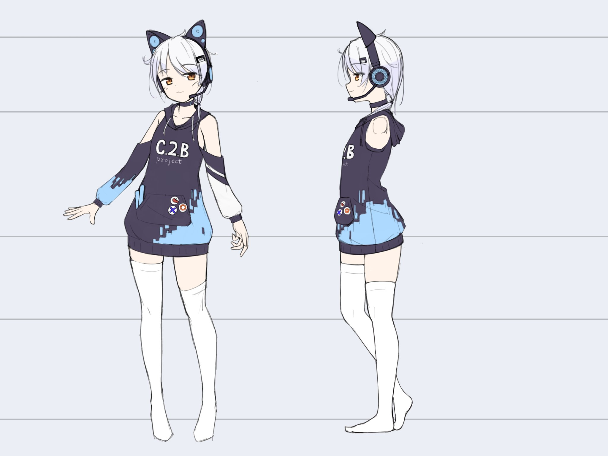

室戸みあ

室戸みあについて
室戸みあは、C.2.B project のオリジナルキャラクターです。 2021年のNFにて行われたVTuber企画で誕生しました。
企画後は、C.2.B projectの看板キャラクターとして活躍しています。
UTAUライブラリ配布!
2024年、ついに室戸みあのUTAU音声ライブラリが完成しました！
この音源は、C.2.B projectのメンバーによって制作されました。
ぜひ、室戸みあの歌声をお楽しみください！
室戸みあ UTAU音声ライブラリー 利用規約
室戸みあ UTAU音声ライブラリー 利用規約
発行: 2024/11/20
発行者: ニコニコ系総合創作サークル C.2.B project
定義
- 「キャラクター 室戸みあ」(以降「本キャラクター」)は、ニコニコ系総合創作サークル C.2.B projectがデザインした絵画作品によって外観的特徴を表現される抽象的概念です。
- 「室戸みあ UTAU音声ライブラリー」(以降「本音源」)は、ニコニコ系総合創作サークル C.2.B projectが会員の音声を収録・加工して制作したものです。
前文
- 本音源、および本キャラクターの著作権は「ニコニコ系総合創作サークル C.2.B project」が保有します。
- 本音源を利用した時点で、本規約に同意したものとみなします。
- 本規約以外の説明で本規約と異なる部分がある場合は、本規約を優先します。
- 最新版の規約を優先します。
- 規約違反をしているコンテンツは、見つけ次第、削除依頼をします。削除依頼を繰り返し無視する場合は、運営への削除要請、BANの要請、法律的な対処をとります。
- 不明な点があれば、下記の連絡先までご連絡ください。
免責事項
本音源を使用したことで生じたいかなる物理的あるいは精神的損害に対して配布者は補償の義務を負いません。
動作確認
「歌声合成ツールUTAU」「OpenUTAU」で動作確認済です。これら以外での正常な動作は保証できません。
以下の事項を行う際は、当方への連絡は不要です。
- UTAU、OpenUTAU以外での音源、原音の利用(AI利用は禁止)
- 同人利用(動画・イラスト・コスプレ、作品の無償/有償頒布)
- 原音設定変更
- クレジットをつけて、またはつけないでの利用
- 配布が終了した以降の本音源の利用
以下の事項を行う際は、当方までご連絡ください。
- 商用利用
- 本キャラクターにちなんだイベント開催
以下の事項は禁止します。
- 公序良俗に反する利用
- 宗教的利用
- 政治的利用
- 犯罪的利用
- 第三者への攻撃的利用
- R-18利用
- 無断の再配布
- 本音源のタイトル、本キャラクター名の偽装
- 制作者、著作権の保有者の偽装
- ボイスチェンジャーを使い、別の声にした状態での利用
- AI等での学習、ディープラーニング等
連絡先
(△を@に置き換えてください)
- ニコニコ系総合創作サークル C.2.B project: c2bpro△gmail.com (Xアカウント: @c2bproject)
- あんぱん総理大臣(制作者): anpanwangling△gmail.com (Xアカウント: @AnpanPremium)